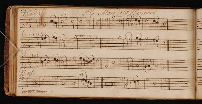

1761: Urania
No study of James Lyon would be complete without mention of his greatest achievement: Urania. This section looks at the broader educational and performance contexts around this tunebook.
After finishing his studies at the College of New Jersey in 1759, Lyon moved south from Princeton to the ever-growing city of Philadelphia. Records of his activities in the city are few and far between, but we know that he must have been busy soon after his arrival. On May 22nd 1760 an advertisement appeared in the Pennsylvania Gazette newspaper looking for subscribers for a “choice collection of Psalm Tunes and Anthems” by none other than James Lyon. The young composer must have accrued a large collection of materials very quickly in order to put such a collection together. By buying a subscription, members of the public would fund a book’s publication upfront before receiving their copy. This was probably the most cost effective way of getting such an ambitious project printed. Lyon had received enough subscriptions to print his book in 1761, and by 1762 non-subscribers to Urania were also able to purchase a copy.
But why is this seemingly innocuous collection of tunes so significant? The simple answer to this is that it was the first collection of printed music to be published by an American. However, this epithet does not do justice to the remarkable achievement of this work and what it represents in the history of American music. To understand Urania instead requires understanding the popularity and growth of singing schools, and the broader musical environment of the Middle Colonies and Philadelphia. The conclusion to this section returns us back to Princeton and the influence of Urania on the College’s students and alumni.
Singing Schools
For a long time the most common type of music making in colonial America (that we have a record of) was the singing of psalms. Anyone who has sung psalm chants today knows that this is often not an easy task; English translations of the Book of Psalms often do not produce satisfyingly musical rhythms that fit well with singable melodies. In 16th century England there was a proliferation of psalters (i.e. books of psalms) that included metrical translations of the text to address this problem. This meant that one would only have to learn a relatively small number of melodies, to which one could sing the text of the whole psalm. In a congregational setting these were performed by “lining out” the psalm whereby each line would be sung in turn and repeated by the congregation.
Lining out continued well into the 18th and 19th centuries in many parts of the United States. In the more comfortably settled New England, however, this practice was already dying out in the early decades of the 18th century. This was partly due to what many regarded as a degradation in the quality of congregational singing. In the frequently quoted 1720 pamphlet The Reasonableness of Regular Singing, or Singing by Note, Thomas Symmes (1678-1725) sought to address the poor state of congregational singing by advocating instead for ‘Regular Singing’ and musical education in singing schools (Ogasapian, 2007). Regular singing, as opposed to lining out, is closer to how most churches now practice singing. Instead of the tedious call-and-response style repetition of every line, some singers would learn how to read music and thus be able to sing in parts without the need for lining out. Singing schools were organisations run by more experienced singers to teach men and women how to sing in this way.
It is surprising that this would be a controversial change in singing habits. But for many members of the church, clergy and laypersons alike, regular singing was too close to “popery,” i.e. the lavish musical traditions of the Catholic church. For them, anything other than the unison singing of psalms went against scripture (Ogasapian 2007, 5). In New Jersey, the debate around the adoption of regular singing over lining out continued among the Presbyterians well into the 1790s, as Charles Kaufman has documented in his book Music in New Jersey, 1655-1860 (1981, 80-1). These objections, however, failed to halt the rapid expansion of singing schools in the mid-18th century, especially in New England. To meet this rising demand for music education, singing manuals started to be written and distributed throughout the colonies. One of the most popular texts of this genre was Thomas Walter’s The Grounds and Rules of Musick Explained; Or, An Introduction to the Art of Singing by Note first published in 1721. As with most musical instruction books, Walter’s Grounds and Rules starts with teaching the rudiments of music and then includes a number of two, three, and four part musical settings of psalms.
Lyon’s Urania follows the same model but includes a far greater amount of music, eclipsing all previous tunebooks in size and scope. As Richard Crawford has pointed out, “one resourceful Presbyterian in Philadelphia, apparently working on his own, managed to bring out a sacred tunebook more wide-ranging and ambitious by far than any book that forty years of Regular Singing in Boston has been able to produce” (2001, 36). It is likely that Lyon taught at a singing school when he moved to Philadelphia after graduation, so Urania may have been directly inspired by this experience (Sonneck 1905, 127). Though Philadelphia had not demonstrated the same zeal for singing schools as New England in the early part of the century, by the time Lyon arrived they were quickly growing in popularity and number.
The advertisements for these singing schools in Philadelphia are rarely, if ever, denominational. This is also reflected on the decorative title page to Lyon’s Urania (pictured above) which reads:
URANIA,
or
A Choice Collection of Psalm-Tunes, Anthems, and Hymns,
From the most approv’d Authors, with some Entirely New;
in Two, Three, and Four Parts
The whole Peculiarly adapted to the Use of
CHURCHES and PRIVATE FAMILIES
To which are Prefix’d
The Plainest, & most Necessary Rules of Psalmody
By JAMES LYON, A.B.
Lyon had a bigger audience in mind than Presbyterian churches or even singing schools, which in turn made Urania a far more marketable product (Crawford 2001, 37). It also correlates with the views about music and the church in The Lawfulness, Excellency, and Advantage of Instrumental Musick (1763) that has been attributed to Lyon. In this essay he laments the division of Christian communities propagated by some churches, which is a barrier to the acceptance of more elaborate church music. Many reformed protestant congregations were, after all, still resisting regular singing.
Urania also addressed the need for more challenging music, particularly anthems (Daniel 1966, 36). By the 1760s, singing schools were not just serving congregations, but also choirs and musical societies with more accomplished singers (Crawford 1990, 17). Though anthems used sacred texts, their musical realisation was far more elaborate and in line with European musical styles. Lyon included six newly composed tunes in Urania, each marked with an asterisk in the score. These new works included psalm tunes and through-composed hymns as well as anthems. Oscar Sonneck took the asterisks to mean that Lyon was the composer of these pieces, but research done by Richard Crawford (1974) and Nicholas Temperley (1997) has since debunked this assessment. Temperley has also been able to identify other original tunes not indicated by Lyon. Only two of the pieces marked with an asterisk can now be attributed to Lyon with any certainty: “Two Celebrated Verses by Sternhold & Hopkins” and “The 104th Psalm by Dr. Watts.” The others are either by Francis Hopkinson, Giovanni Palma, William Tuckey or their composer is unknown. Crawford has argued that authorship was not a priority for publishers, certainly before 1760, as it was assumed that such collections would always contain English music (1990, 9).
These new compositions in Urania are also representative of an aesthetic shift around 1760. As Kenneth Silverman has noted in his Cultural History of the American Revolution “the inclusion of hymns and anthems [in Urania] was a key step in a process that subtly separated Presbyterian and Congregational vocal music from its scriptural subject matter and gave music an independent esthetic [sic] existence.” (1976, 43) Especially as concert life in Philadelphia began to grow, singers became more accomplished, and music performances at non-religious events (such as college commencements) became more commonplace, the commercial publication of a collection like Urania was timely.
Francis Hopkinson and Philadelphia
While in Philadelphia, and with most of the work for Urania complete, Lyon completed the required work to receive an A.M. from the College of Philadelphia (now University of Pennsylvania) in May 1761. Among those in attendance at the commencement was the American Renaissance man and signer of the Declaration of Independence Francis Hopkinson (1737-1791). Hopkinson was, among many other things, a harpsichordist and amateur composer. As mentioned in the Introduction, his 1759 song “My Days Have Been So Wondrous Free” was also one of Sonneck’s contenders for “America’s first composition.” In 1760, when he received his own A.M. from the College of Philadelphia, the Pennsylvania Gazette reported that a student (Hopkinson) performed several of his own compositions on the organ (15th May 1760). Like Lyon, he then composed music for the following year’s commencement at his alma mater. But he was not the only composer on the billing in 1761: James Lyon also had an ode performed in memory of the late George II.
Unfortunately, the music of neither composer has survived from this event. The published text to Hopkinson’s own ode to King George II is the only extant document. Looking at this text, we can see a lot of differences between Hopkinson’s and Lyon’s approach to commencement music. Whereas Lyon’s compositions are primarily choruses, Hopkinson offers an almost operatic set of pieces including a Recitative, two Airs, two Symphonies and a Chorus. Even comparing the scores we have of Lyon and Hopkinson, it is clear that Hopkinson is a far more refined and technically capable musician. We also know that Hopkinson was very active in the burgeoning Philadelphia music scene, as well as a friend and student of James Bremner. Bremner was an English organist who arrived in Philadelphia in 1763 and fast became a musical celebrity, holding subscription concerts in the city. This is exceptional given that there is no record of any public concert in Philadelphia before 1757 (Sonneck 1907, 66; Chase 1966, 100). Once again, Lyon ended up in an ideal place for music making.
Commonplace Book of Musick (dated 1760)
In the initial 1760 advertisement for Urania, potential subscribers were given the details of several individuals and locations where they could offer their subscription of one dollar. One of these people was Jonathan Baldwin, steward of the College of New Jersey. It is not a surprise, then, to see so many of Lyon’s classmates and fellow Princetonians in the Urania subscribers list of 1761. Among these names is Samuel Davies, who had bought four copies before his untimely death in 1761. Another eminent subscriber was the famous physician and Founding Father of the United States Benjamin Rush, who had completed his A.B. at the College in 1760. The list goes on and on, however this register of names gives us few clues to how people like Rush would have used the book.
One of the more curious items I came across in the Princeton Library offers a slightly different story to how Lyon’s work proliferated. This manuscript is a Commonplace Book of Musick autographed by Joseph Periam (class of 1762) and dated 1760. On opening up this small oblong book I found that it contained an unexpectedly large amount of hand-written psalm tunes, hymns and anthems (37 in total), many of which also appear in Urania. This gave me more questions than answers: did Periam have access to Urania from one of the many Princeton subscribers? Even if this is the case, the manuscript still appears to predate the typesetting of Urania in 1761. Was Periam, then, also a collector of tunes? Did he perform from this book?
A recent Ph.D. dissertation defended in May 2017 by Christa Pehl Evans at Princeton University has explored the practice of music commonplacing in 1790s Pennsylvania. She points out that commonplace books often reveal a much richer musical life than we see in published collections. “A manuscript,” she notes, “could be solely for one’s own personal use, but the potpourri-like nature of many of the commonplace books suggests that musicians copied from friends’ books as well.” I suspect that this last point is true of Periam’s music book. It seems to have been in his possession between 1760 and 1764 after which it was given to his classmate Caleb White (owner of the “Ode on Peace” broadside). I believe that Periam would have had access to a 1761 edition of Urania in order to produce this book for two reason; first, because over two thirds of the pieces included are included in Lyon’s collection. But second, and more tellingly, Periam has carefully copied the layout of Lyon’s printed edition of the “Morning Hymn,” which was first published in Urania. For example, looking at the fourth measure of the Counter line (alto), Periam has copied the joined up ledger line of the pitch A. The slurring in the bass part of the same measure is also the same.
The oblong shape of Periam’s book is typical of music editions of the 18th century, Urania being a case in point. It seems likely that, given the usual practice of music commonplacing, Periam would have sung from this book while he was living in Nassau Hall. It gives us a tantalising hint of the musical culture among the students at the College. There must have been some musical expertise, after all, when Lyon returned for his master’s degree in 1762 with a lot more music for the occasion.
